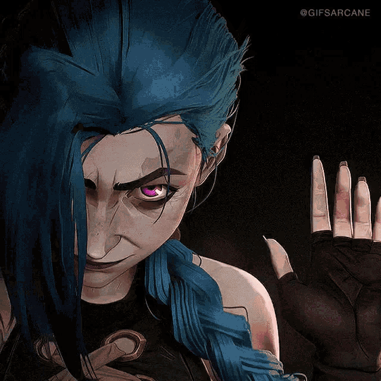
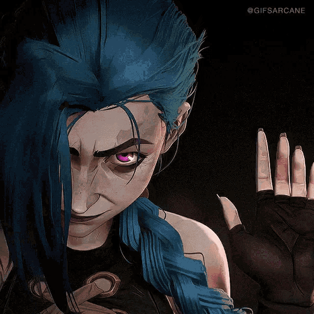

JINX
 


First Appearance: Episode 1 - *Welcome to the Playground*
Once an innocent and hopeful girl named Powder, Jinx was forever changed by the
tragedies of her past. Struggling with abandonment, loss, and an overwhelming desire
for approval, she descended into madness under the guidance of Silco.
Now, she is an unpredictable force of chaos, driven by both love and destruction,
leaving a trail of devastation in her wake. Her full transformation into Jinx is marked
by the pivotal moment in Episode 3, *The Base Violence Necessary for Change*.